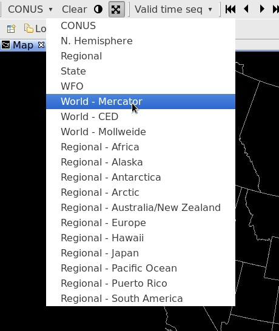
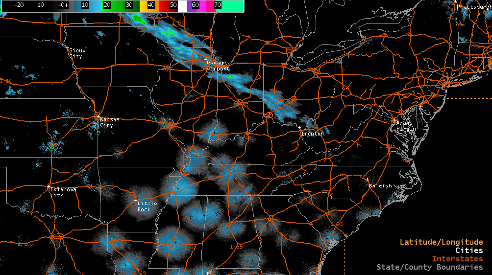
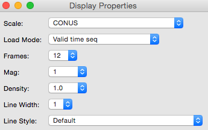

D2D User Guide : Introduction
D2D Toolbar
D2D (Display 2-Dimensions) is the default AWIPS CAVE perspective, designed to mimmic the look and feel of the legacy AWIPS I system.
-
System menus include CAVE, File, View, Options, Tools, and Help (far right)
-
Data menus include Models, Surface, NCEP/Hydro, Upper Air, Satellite, Radar, MRMS, and Maps.
Frame control, map projection, image properties, and a few featured applications (Warngen, Nsharp, Ncdata, and Browser) make up the the primary D2D toolbar.

Map Projections
The first toolbar menu item is a dropdown menu for different geographic areas and map projections. The default view is always CONUS, which is a North Polar Steregraphic projection centered on the Continental United States.
Default projections and areas available in the menu
- N. Hemisphere (North Polar Stereographic)
- Regional (for the selected localization site)
- WFO (for the selected localization site)
- World Mercator
- World CED
- World Mollweide
- and Regional Mercator projections for Africa, Australia/NZ, South America, Europe, Alaska, Hawaii, Puerto Rico, Japan, Pacific Ocean, and the north and south poles.

Resource Stack
At bottom-right of the map window the the Resource Stack, which displays all loaded resources and map overlays, and allows for interaction and customization with the resource via a right-click menu.
Left-Click Resource Name to Hide
A left click on any resource in the stack will hide the resource and turn the label gray. Clicking the name again makes the resource visible.

Left-Click Background to Hide Resource Types
A left click of the mouse anywhere on the map will hide the Resource Stack display names, which may help to declutter the view if a number of data types are loaded at once.
Hold-Right-Click Background for Display Menu
Holding down the right mouse button anywhere in the map view will open a right-click menu

Show Map Legends
From the above menu select Show Map Legends and watch the Resource Stack show only map resources which are loaded to the view.

Toggle 2 or 4-Panel Layout
Right-click hold in the view and select Two Panel Layout or Four Panel Layout to create duplicates of the current view (note that any data loaded to the view will be loaded to both displays within the view).
From this multi-pane display, hold-right-click again and you will see the Single Panel Layout option to switch back to a standard view (defaulting to the left of two, and top-left of four).
Sample Loaded Resources
Most data types have a right-click menu option for reading out the pixel value, displayed as multi-line text for multiple resources.

Hold-Right-Click Resource Name for Menu
Drag the mouse over a loaded resource and hold the right mouse button until a menu appears (simply clicking the resource with the right mouse button will toggle its visibility).
The hold-right-click menu allows you to control individual resource Image Properties, Change Colormaps, change resource color, width, density, and magnification, move resources up and down in the stack, as well as configure custom options with other interactive resources.

Product Browser
The Product Browser allows users to browse a complete data inventory in a side window, organized by data type. Selections for GFE, Grids, Lightning, Map Overlays, Radar, Satellite, Redbook, and VIIRS are available. All products loaded with the Product Browser are given default settings.

Switch Pane Layouts
will switch between the single page (default) view and the 5-panel WFO view (centered on OAX by default).
Time Options (Ctrl + T)
This check button enables/disables the ability to select the time interval between frames of real-time or model data. This feature has the added benefit of allowing you to view extended amounts of data (temporally) but stay within the limits of 64 frames. For example, METAR surface plots, which typically display every hour, can be set to display every three hours via the Select Valid Time and Time Resolution Dialog Box.
When the Time Options check button is selected, the next product you choose to display in the Main Display Pane launches either the Select Valid Time and Time Resolution dialog box or the Select Offset and Tolerance dialog box.
-
When you are loading data to an empty display and the Time Options check button is enabled, the Select Valid Time and Time Resolution dialog box opens.
-
Valid Time: In this column of dates/times, you may choose the one that will be the first frame loaded onto the Large Display Pane. The Default option is the most recent data.
-
Time Resolution: This column contains various time increments in which the data can be displayed. Once you make a selection, the Valid Time Column indents the exact times that will be displayed. The Default resolution displays the most recent frames available.
-
-
With the Time Options check button enabled for a display that already contains data, when you choose the data to be overlaid in the Main Display Pane, the Select Offset and Tolerance dialog box appears, providing the following options:
-
Offset: This column contains various time increments at intervals before, at, or after the time you selected for the first product that is displayed in the Main Display Pane.
-
Tolerance: The options in this column refer to how strict the time matching is. “None” means an exact match, while “Infinite” will put the closest match in each frame, regardless of how far off it is.
-
Data Scale (Ctrl + S)
This check button enables/disables the ability to display data on its native scale. For example, if you enable Data Scaling and select a product from an alternate radar, the data will be displayed with that radar in the center of the screen. Other data can be overlaid on this “dynamic” scale until the Main Display Pane is cleared or a non-plan-view product is loaded.
Image Combination (Insert)
This check button enables/disables the ability to display two images at once. You can also enable/disable the ability to combine images by using the Toggle Image Combination iconified button on the Toolbar.
Combined-image displays have been improved by removing the valid time for non-forecast products and removing the date string (time is kept) from the left side of the legend. In particular, this makes All-Tilts radar legends more usable.
Display Properties
This menu option opens the Display Properties dialog box. All the options available in this dialog box are also available on the Toolbar.

Loop Properties (Ctrl + L)
Loop Properties is another dialog box that can be opened from the Options menu or from the Loop Properties iconified button on the D2D Toolbar, or by using the Ctrl + L keyboard shortcut. The dialog allows you to adjust the forward and backward speeds, with 0 = off and 10 = maximum speed. You can set the duration of the first and last frame dwell times to between zero and 2.5 seconds.
You can turn looping on or off by checking the Looping check button. There is also a Looping button located on the Toolbar that enables/disables the animation in the large display pane. Finally, you can turn looping on and increase/decrease forward speed by pressing Page Up/Page Down on your keyboard, and turn looping off with the Left or Right Arrow keys. On the toolbar, you can use the button to start/stop looping.
Image Properties (Ctrl + I)
The Image Properties dialog box can be opened here or by using the Image Properties iconified button on the D2D Toolbar, or using using the Ctrl + I keyboard shortcut. This dialog box provides options that allow you to change the color table; adjust the brightness, contrast, and alpha of either a single image or combined images; fade between combined images; and/or interpolate the displayed data.
Set Time
This option allows you to set the CAVE clock, located on the bottom of the screen, to an earlier time for reviewing archived data.
Set Background Color
You can now set the background display color on your workstation. You can also set the background display color for a single pane via mouse Button 3 (B3).
Switching Perspectives
CAVE > Perspective
D2D is one of many available CAVE perspectives. By selecting the CAVE > Perspective menu you can switch into the GFE, Hydro, Localization, MPE, or National Centers Perspective (which is available in the Other… submenu. Nobody seems to know why the NCP is not listed with the other perspectives, or how to make it appear with them).

Preferences
Preferences and settings for the CAVE client can be found in the CAVE > Preferences menu.
Set the Localization Site and server for the workstation; configure mouse operations, change performance levels, font magnification, and text workstation hostname.

Load Mode
Also under the Display Properties option is Load Mode, which provides different ways to display data by manipulating previous model runs and inventories of data sets. The selected load mode is shown on the toolbar when the Load Mode menu is closed.
A description of the Load Mode options follow.
- Latest: Displays forecast data only from the latest model run, but also backfills at the beginning of the loop with available frames from previous runs to satisfy the requested number of frames.
- Valid time seq: Displays the most recent data and fills empty frames with previous data. For models, it provides the product from the latest possible run for every available valid time.
- No Backfill: Displays model data only from the most recent model run time with no backfilling to fill out a loop. Using this Load Mode prevents the mixing of old and new data.
- Previous run: Displays the previous model run, backfilling with frames from previous runs at the beginning of the loop to satisfy the requested number of frames.
- Prev valid time seq: Displays the previous model run and fills empty frames with previous model data or analyses.
- Prognosis loop: Shows a sequence of n-hour forecasts from successive model runs.
- Analysis loop: Loads a sequence of model analyses but no forecasts.
- dProg/dt: Selects forecasts from different model runs that all have the same valid times. This load mode is available only when there are no other products loaded in the large display pane.
- Forced: Puts the latest version of a selected product in all frames without time-matching.
- Forecast match: Overlays a model product only when its forecast times match those of an initially loaded product. This load mode is available only when another product is already loaded in the large display pane.
- Inventory: Selecting a product when the load mode is set to Inventory brings up a Dialog Box with the available forecast and inventory times from which you can select the product you want. Inventory loads into the currently displayed frame.
- Slot: Puts the latest version of a selected product in the currently displayed frame.